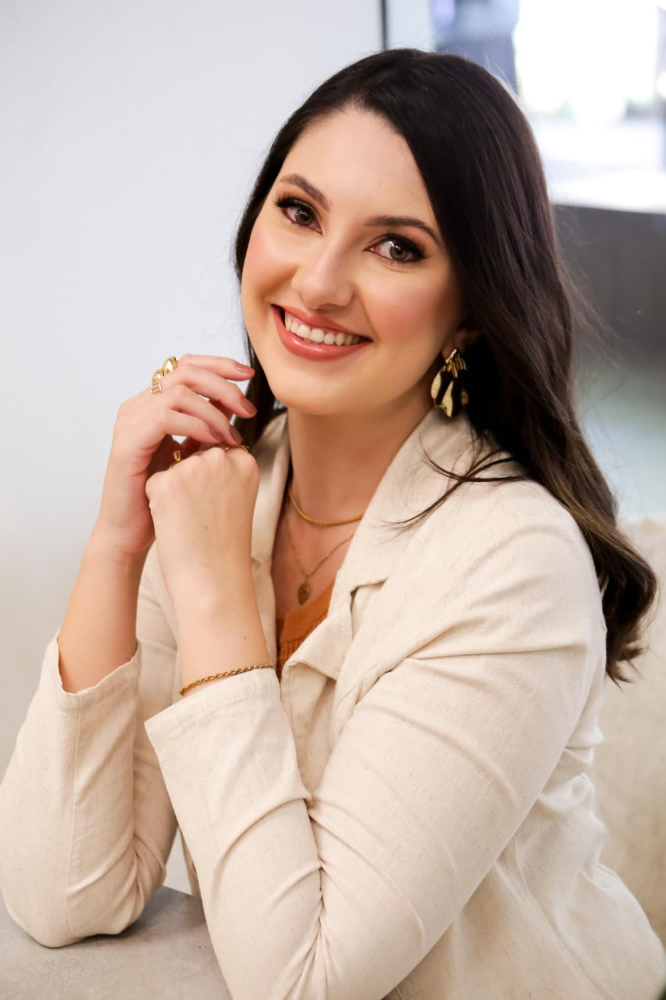

A Mentoria Estude Ambiental transforma editais extensos, rotinas apertadas e dificuldades nos estudos em uma preparação organizada, com plano personalizado, metas diárias, revisões, questões, simulados e acompanhamento próximo.
Quero aplicar para a MentoriaPreencha a aplicação em poucos minutos e conclua seu atendimento pelo WhatsApp.
Método TEIATrilha · Estudo · Iteração · Avaliação
"Fechou 51% do edital, 83% de aproveitamento na objetiva e gabaritou a redação na prova."Lucemir — Fiscal Ambiental, IDEMA/RN
"Já tinha batido na trave em dois concursos anteriores. 87,5% de aproveitamento em mais de mil questões resolvidas."Daniel — Analista Ambiental, IDEMA/RN
Neste vídeo, eu vou mostrar por que tantos concurseiros ambientais acumulam materiais, passam horas estudando e continuam sem saber se estão no caminho certo. Você também vai entender como funciona a Mentoria Estude Ambiental e o que muda quando sua preparação deixa de depender de improviso.

Assista até o final para entender o Método TEIA antes de aplicar.
Quero uma preparação com direçãoQuem estuda para concursos ambientais costuma enfrentar um problema diferente do concurseiro de outras áreas. Os editais misturam legislação, políticas públicas, conhecimentos ambientais, conteúdos específicos da formação, língua portuguesa, informática, administração e diversas outras disciplinas.
Sem uma estratégia, a preparação vira uma sequência de decisões cansativas: qual concurso priorizar, qual matéria estudar, quando revisar, quantas questões resolver, qual material usar e o que fazer quando o edital muda.
Isso não significa que você seja incapaz ou indisciplinado. Significa que está tentando administrar sozinho uma preparação complexa demais.
Cursos, PDFs, videoaulas e bancos de questões são ferramentas importantes. O problema começa quando você tem acesso a tudo isso, mas continua sem saber o que usar, em qual sequência e durante quanto tempo. A Mentoria Estude Ambiental não é um cursinho e não entrega apostilas, PDFs ou videoaulas de conteúdo. Eu organizo sua preparação e indico as melhores fontes, pagas ou gratuitas, para cada matéria, pra que cada hora de estudo tenha uma finalidade.
Cada trajetória é diferente. Por isso, em vez de prometer aprovação, mostramos o que acontece quando o aluno deixa de estudar sem direção e passa a seguir um processo.
"Formado em Ciências Contábeis, sem nenhuma bagagem ambiental. Fechou 51% do edital, 83% de aproveitamento na objetiva e gabaritou a redação na prova."
"Formada em Direito e Arquitetura, começou a estudar a área ambiental cerca de três semanas depois do edital. Foi de nota baixa a 30/30 na redação de Fiscal."
"Já tinha batido na trave em dois concursos anteriores por causa da nota mínima na discursiva. 87,5% de aproveitamento em mais de mil questões resolvidas."
"Fechou quase 50% do edital com 85% de aproveitamento. 'Eu senti uma leveza', foi a frase dela sobre sair do estudo por conta própria para um plano acompanhado."
"Entrou na mentoria já na reta final, poucas semanas antes da prova, com um plano focado no que ainda faltava fechar."
O Método TEIA organiza a preparação em quatro movimentos que se conectam. Você não recebe apenas uma lista de matérias: cada etapa alimenta a próxima e permite que o plano evolua junto com você.
Mapeamos seu momento: concurso e cargo de interesse, histórico de estudos, tempo disponível, materiais e desempenho. O edital é organizado em uma trilha de prioridades: você entende o que estudar primeiro, o que pode esperar e como distribuir o conteúdo ao longo do tempo.
A estratégia sai do papel e vira execução. Você recebe metas diárias com indicação de fontes para o estudo teórico, revisões, questões e atividades adequadas à sua fase de preparação, e inicia o dia entendendo exatamente o que precisa cumprir.
Nenhum planejamento continua perfeito por meses. A rotina muda, dificuldades aparecem, editais são publicados. Por isso o plano é acompanhado e ajustado: o que não funcionou é corrigido, o que deu resultado é reforçado.
Você precisa saber se está apenas cumprindo horas ou realmente evoluindo. Questões, simulados e relatórios ajudam a identificar falhas, acompanhar acertos e direcionar os próximos ciclos de estudo. Quem tem discursiva no edital ainda conta com guia de estudo e correção como bônus da mentoria.
Entendemos sua rotina, seu histórico, seu objetivo, seu tempo de estudo, os materiais disponíveis e as dificuldades que mais atrapalham sua preparação.
Seu edital é organizado e transformado em uma sequência de estudo compatível com o seu momento.
Você aprende a visualizar e concluir suas metas, registrar atividades, acompanhar desempenho, lidar com atrasos e utilizar os recursos da mentoria.
A cada dia, você acessa a plataforma e encontra as atividades previstas. Menos energia decidindo o que fazer, mais energia estudando.
Seu desempenho, dificuldades e cumprimento das metas são acompanhados para que os próximos passos façam sentido.
O plano é atualizado quando sua rotina muda, quando um edital é publicado, quando uma disciplina exige mais atenção ou quando seu desempenho indica uma nova prioridade.
Na Tutory, você acompanha sua preparação em um só lugar. O objetivo não é criar mais uma obrigação, mas reduzir o número de decisões que você precisa tomar sozinho.
Visualize as tarefas previstas, conclua o que estudou e acompanhe o cumprimento do plano.
Veja horas planejadas, horas executadas, andamento das disciplinas e previsão de conclusão.
Acompanhe sua taxa de acertos e identifique quais matérias e assuntos precisam de mais atenção.
Registre e acompanhe a resolução de questões, os erros e a evolução por conteúdo.
Treine o formato da prova, organize seus envios e receba orientações para melhorar. Guia, simulados e correção de discursiva são bônus para quem tem essa fase no edital.
Quando algo sair do previsto, o plano é reorganizado, e você acompanha sua constância e conquistas ao longo das semanas.
Organização das disciplinas, assuntos e prioridades conforme o concurso, o cargo, o histórico e a disponibilidade do aluno.
Atividades distribuídas de forma prática para reduzir dúvidas e facilitar a execução.
Revisões programadas em diferentes intervalos para reforçar o conteúdo e reduzir o esquecimento.
Acompanhamento de acertos, erros, disciplinas e assuntos que precisam ser fortalecidos.
Treinos para desenvolver gestão de tempo, resistência, estratégia de prova e identificação de falhas.
Para quem tem discursiva no edital, guia de estudo, treinos e correção entram como bônus da mentoria.
Guias práticos sobre como usar a trilha, organizar revisões, resolver questões e simulados dentro do Método TEIA. Não é material de conteúdo das disciplinas.
Encontros para trabalhar questões, estratégia, dificuldades e pontos importantes da preparação.
Canal para dúvidas, orientações e ajustes relacionados à execução do plano.
Adaptações de acordo com mudanças na rotina, desempenho, publicação do edital e proximidade da prova.
Esta oferta contempla o acompanhamento descrito acima dentro do plano escolhido. Os detalhes de cada plano (3, 6 ou 12 meses) são apresentados durante a aplicação.
Os concursos ambientais envolvem órgãos, cargos, formações e bancas muito diferentes. Um biólogo, um engenheiro ambiental, um agrônomo, um oceanógrafo e um candidato a um cargo generalista podem compartilhar algumas disciplinas, mas não devem seguir exatamente a mesma preparação. A Estude Ambiental nasceu para organizar essa complexidade: o plano considera o edital, o cargo, a formação exigida, a banca, a fase do concurso e o histórico do aluno.
A mentoria oferece direção, método e acompanhamento. A execução continua sendo responsabilidade do aluno.
Eu sou Dominique Sala, engenheira ambiental, mestra em Engenharia Urbana, pós-graduada em Engenharia de Segurança do Trabalho e fundadora da Estude Ambiental.
Ao longo da minha trajetória, desenvolvi uma habilidade que se tornou a base da mentoria: pegar informações extensas e desorganizadas e transformá-las em caminhos claros, processos e ferramentas de execução.
Nos concursos ambientais, isso significa analisar editais, compreender as exigências de cada cargo, organizar conteúdos, estabelecer prioridades e transformar tudo isso em uma preparação que caiba na rotina do aluno.
Criei a Estude Ambiental porque percebi que muitos candidatos não precisavam apenas de mais aulas. Eles precisavam de alguém que os ajudasse a decidir o que fazer com todo o conteúdo disponível. Meu trabalho não é prometer um caminho fácil. É reduzir o improviso, orientar suas decisões e acompanhar a evolução da sua preparação.
Dominique Martins SalaFundadora da Estude Ambiental
Se você quer construir uma preparação organizada para concursos da área ambiental, preencha a aplicação. Suas respostas serão analisadas para entender seu momento e verificar se a Mentoria Estude Ambiental faz sentido para você.
Marque a caixinha acima concordando com os termos pra continuar.
Quero aplicar para a MentoriaA aplicação não garante uma vaga e não gera cobrança. Ela inicia a análise do seu momento e a continuidade do atendimento pelo WhatsApp.